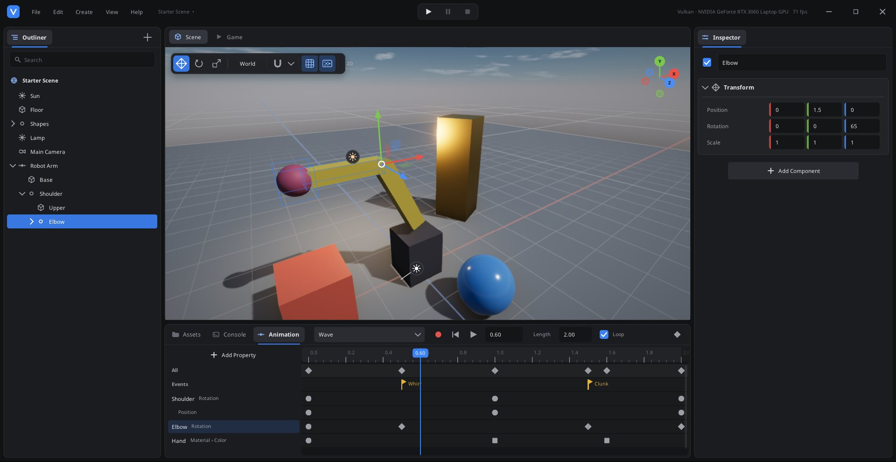

Animation
An Animator animates its object and everything under it: a door swinging open, a robot arm, a light that flickers, a character walking. It plays animations (.anim files made on the editor's timeline, or a model's own walk and run), or an animation graph that blends them by what the game tells it: walking into running as the character speeds up, an attack over the top when a button's pressed.
Animating in the editor
- Select the object to animate (the top of everything that moves together) and open the Animation panel: View › Animation, or Edit Animation on an Animator in the inspector. If the object has no Animator, the panel offers to add one.
- Press New Animation. It makes a
.animfile inAssets/Animations, and the Animator plays it. - Turn on Record (the red dot), move the playhead along the ruler, and change things: move, turn and scale the object and the ones under it in the scene, or change their settings in the inspector. Each change becomes a key at the playhead. The first change to something also keys it at the start as it was, so it moves from there.
- Press Play (or Space over the panel) to watch it. It's saved as you go.

While the panel shows an animation, the objects are posed as it has them at the playhead. They're put back as they were when you select something else, before the scene's saved, and before play, so the scene keeps its own pose.
| Do this | To |
|---|---|
| Drag along the ruler | Move the playhead (hold Shift to go between frames) |
| Click a key, Shift-click more | Pick them. A key in the All row picks every key at that time. |
| Drag picked keys | Move them in time, on whole frames |
| Right-click a key | Choose how it goes on to the next: Smooth (eases, without overshooting), Linear (steady) or Step (holds, then jumps: for switching things on and off) |
| Del | Delete the keys picked |
| Double-click a row | Add a key there, keeping the curve as it was |
| Add Property | Animate one of the selected object's values without recording |
| ◆ (top right) | Key everything the selected object has tracks for, as it is now |
| Ctrl+wheel, Shift+wheel or middle drag | Zoom the timeline, scroll it along |
Length and Loop are in the panel's header. An animation that loops starts again at the end; one that doesn't holds its last pose.
What can be animated
Anything under the Animator: each object's position, rotation (in degrees, so it can spin round more than once) and scale, whether it's shown, and any setting of its components that's a number, true/false, vector or colour: a light's brightness and colour, a material's colour and glow, an audio source's volume. A track finds its object by where it is under the Animator (Arm/Hand), so renaming or moving an object loses its track: its name turns red in the panel.
Events
Double-click the Events row to add an event, and type its name. Visual scripts on the object hear it as an event of that name (an On Event node) when the animation passes it, and C# hears it through EventReached: footsteps, a sword's swing, a door's clunk. Drag events along like keys.
Characters with bones
Drag a model with a skeleton (FBX, glTF, Collada...) into the scene. Its bones come in as objects, its meshes get a Skinned Mesh Renderer that bends them with the bones, and its root gets an Animator playing its first animation. The model's animations are offered wherever an animation can be chosen, called by their name and the model's (Walk (Robot)).
- A model's own animations can't be changed, as they're part of its file. Duplicate to Change in the Animation panel copies one into a
.animfile of your own. - Bones are objects like any other: put a sword under the hand bone and it's carried.
- Meshes are bent on the CPU when their bones move, so a skinned mesh draws, casts shadows and takes surface shaders like any other.
Animation graphs
An animation graph works out the pose each frame from its animations, by its parameters: numbers, true/false values and triggers that the game sets. In the Assets panel, press + and choose New Animation Graph, or press the button of that name under an Animator in the inspector. It starts with idle, walk and run blended by a Speed parameter: choose an animation on each Clip node, or drag animations from the Assets panel onto the graph (onto a Blend by Value or a Switch, they're linked into its next input).
| Node | What it does |
|---|---|
| Clip | Plays an animation, at a speed. It starts from the beginning each time it comes back into play. |
| Blend by Value | Blends any number of poses by a value, each at its own point: idle at 0, walk at 1.5, run at 4. |
| Blend by Bool | One pose or another, fading between them when a true/false changes: crouching or standing. |
| Switch | One of any number of poses by number, fading to the new one: a character's states. |
| Layer | Puts one pose over another from an object down: an upper body aiming while the legs walk. |
| Play Once | Plays an action over a pose when a trigger's set, then blends back: attacks, jumps, flinches. |
| Blend, Rest Pose | A mix of two poses by a weight; everything as it was before any animation moved it. |
Get Parameter nodes read the parameters, and there's a little maths and logic to work things out from them. Each Animator using a graph shows its parameters in the inspector, to start at values of its own. The node reference has every node. While the game plays, the nodes in use light up.
From code
public class Player : Component
{
public Transform Head { get; set; } = null!;
public GameObject LookingAt { get; set; } = null!;
private Animator _animator = null!;
private CharacterController _body = null!;
protected override void Start()
{
_animator = GetComponent<Animator>()!;
_body = GetComponent<CharacterController>()!;
_animator.EventReached += e =>
{
if (e.Name == "Footstep") GetComponent<AudioSource>()!.Play();
};
}
protected override void Update()
{
_animator.Set("Speed", _body.Velocity.Length());
_animator.Set("Crouching", InputSystem.GetKey(Key.ControlLeft));
if (InputSystem.GetMouseButtonDown(MouseButton.Left)) _animator.SetTrigger("Attack");
}
// After animation: turn the head towards what it's looking at.
protected override void LateUpdate() => Head.LookAt(LookingAt.Transform.WorldPosition);
}
animator.Play(clip, fade: 0.2f)blends into an animation. Over a graph, one that doesn't loop blends back into the graph when it ends;Stop()stops it.animator.Sample(clip, seconds)poses the objects at a moment of an animation without playing it, andResetPose()puts them back.- Animations load like any other file:
Assets.LoadAnimation("Animations/Wave.anim"), or a model's own,Assets.LoadAnimation("Models/Robot.glb#Walk"). - Animation happens after every component's
Update, so what's set there shows the same frame.LateUpdatecomes after it, to change what the animation did.
From visual scripts
Set Animation Parameter and Trigger Animation set an Animator's parameters, Play Animation and Stop Animation play animations on it, and an animation's events arrive as events (On Event) on its object's scripts.